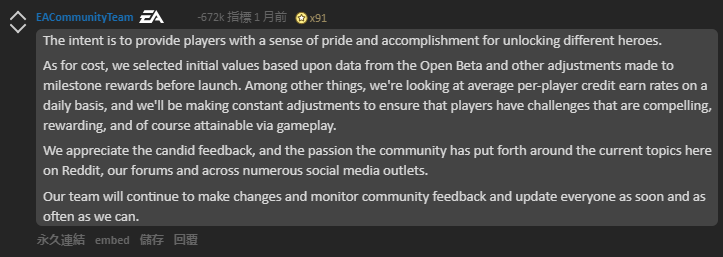

卻發現許多遊戲內容，甚至是喜愛的角色「黑武士」都遭鎖定而無法遊玩。
實際上，如果玩家要解鎖《 星際大戰：戰場前線2 》的全部遊戲內容，
可能需要花費超過4500 個小時的時間；
要是願意花費金錢的話，大概要花費2100 美元，
這已經是遊戲原始售價的35 倍。
針對此事，EA官方在Reddit上回復稱：
是Reddit史上最低評價的留言，
比排在其後的99條垃圾評論得到的差評加起來還要多。

EA對於玩家的無誠意回覆成為Reddit史上最低評價的留言
遊戲產業內部規制的失信?
在這個議題中，不可否認地，抽箱機制 (Loot Box)可能導致的種種影響逐漸受到重視，特別是對於販售對象中的年少群體。
當如EA之知名發行公司，以及家喻戶曉的星際大戰作品涉及利用人們的賭博心態，進而掏出錢包遊玩這些美化的拉霸 (Glorified Slot-machines)。如何規制及保護可能受影響的年少群體便再度浮上檯面。

氣憤的玩家稱抽箱機制為美化的拉霸 (Glorified Slot-machines)
娛樂軟體分級委員會 (Entertainment Software Rating Board, ESRB) 自1994年由年由娛樂軟體協會 (Entertainment Software Association, ESA) 創立，為眾多各性質的遊戲軟體提供遊玩年齡分級，並以標籤提示遊戲中的內容性質：如暴力、粗俗用語等。而其中模擬賭博 (Simulated Gambling)、賭博 (Gambling)等遊戲內容在該協會的網站中列為影響遊戲評級的準則之中；分別將影響該遊戲作品評定為適合青少年(TEEN)與成人限定(ADULTS)。

娛樂軟體分級委員會的各項遊戲年齡分級
依造委員會網站的定義，模擬與實際賭博的定義僅在使用的貨幣是否為實際金錢與虛擬貨幣的差異。使得人們不禁懷疑，使用實際金錢支付並獲取獎勵的抽箱機制，難道不該在該分類基準上視為賭博嗎？
於2017年10月10日結束的《星際大戰：戰場前線II》短期公開測試，其內購機制引起玩家反彈聲浪使得發行商EA承諾會修改遊戲內物品的抽箱機制。此時面對氣憤玩家的質疑，ESRB親上火線滅火，迅速地於10月12日公開聲明抽箱機制並非賭博，意圖平息反彈的聲浪。
委員會之聲明合理地考慮了抽箱機制及遊戲內賭博仍屬於法律上的灰色地帶 (Grey Area)，又或者目前法律規範還尚未跟上瞬息萬變的遊戲產業生態。但回到ESRB的成立宗旨本為透過內部規制的方式，以正確的決策使遊戲產業更趨完善，並同時避免受到外部不合理法律的規制。
夏威夷州政府正研究通過立法禁止不當的抽箱機制
如今當此內部規制試圖引用「法律規範並不承認抽箱機制為賭博」來救火，而非其自訂之遊戲評級準則，但仍逐漸失去廣大玩家的信用之時。相信ESRB仍能懸崖勒馬，而非等到玩家們請求真正的法律回來規範就更為得不償失了。
(更多正向的法案、Apple提出包含機率、爭取權力回到玩家之中)